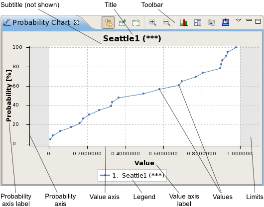
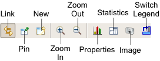

Probability chart view
The probability chart displays the probability that the test of a given device does not exceed a certain value. You can also compare probability graphs (as long as they come from the same test suite, test method, and test).
A probability chart is opened by choosing from the shortcut menu of a Test summary tab. It can also be opened using the New button (see below) from the toolbar of another probability chart or using the menu command.

These are the elements in the main area of the chart (for the toolbar and shortcut menu, see below):
- Title: By default, the name of the test being displayed and its number in parentheses. You can edit this label in the chart properties.
- Subtitle: By default, the grouping in effect, if any. You can edit this label in the chart properties.
- Toolbar: The action buttons of the chart. See the Toolbar section, below, for details.
- Probability axis label: By default, this is "Probability [%]". You can edit this label in the chart properties.
- Probability axis: The probability axis displays the percentage that a test result does not exceed a given value. You can specify the range of this axis in the chart properties.
- Value axis label: By default, this is "Value". You can edit this label in the chart properties.
- Value axis: The value axis displays test result values. You can specify the range of this axis in the chart properties.
- Limits: These zones indicate areas outside the specified test limits.
- Legend: A description of the individual test series that are displayed. You can configure the display of the legend in the preferences.
You can zoom in on the chart by drawing a rectangle around the area you want to enlarge (in addition to using the Zoom In button described below). You can reset the zoom level to its default by double-clicking anywhere in the chart area.
Toolbar

The toolbar of a probability chart view includes these buttons:
- Link: Links the display in the view to the selected row in the data navigation view.
In this mode, if the selection in the data navigation view changes, the display updates automatically.
- Pin: Freezes the display in the view.
In this mode, the view keeps displaying the rows it currently displays, even when the selection in the data navigation view changes. Dynamic updating can be resumed by clicking the Link button.
- New: Creates a new probability chart view.
- Zoom In: Enlarges a section of the chart to show more detail.
- Zoom Out: Reduces the scale of the chart to show more data.
- Properties: Opens the Probability Chart Properties dialog.
- Statistics: Displays the data that underly the graph. The information categories are the same as the columns in test summary tabs. Clicking the button again hides the values and displays the chart.
- Image: Clicking this buttons lets you save the current chart display as a PNG or JPEG image.
- Switch Legend: Switches the position of the legend between the bottom and the right side of the chart.
Shortcut menu
The shortcut menu of a probability chart view contains these commands:
- Zoom In: Enlarges a section of the chart to show more detail.
- Zoom Out: Reduces the scale of the chart to show more data.
- X Axis: The commands in this submenu let you set the range of the
value axis:
- Min/Max: The axis begins with the smallest measured value and ends with the largest measured value.
- Limits: The axis begins with a value slightly below the lower limit and ends with a value slightly above the upper limit. (This is the default setting.)
- Double: The range of the axis around its midpoint is doubled.
- Half: The range of the axis around its midpoint is halved.
- Y Axis: The commands in this submenu let you set the range of the
probability axis:
- Auto: Scales the axis so that all data points are displayed. (This is the default setting.)
- Double: The range of the axis around its midpoint is doubled.
- Half: The range of the axis around its midpoint is halved.
- Show in Raw Data: Right-clicking on a data point and choosing this
command highlights the row in the raw data view that contains the
data point's underlying data.
This command is only available when you click a data point, not in other regions of the chart.
- Restore Defaults: Resets the zoom level and axis settings to their defaults.
- Properties: Opens the Probability Chart Properties dialog.
Functional changes
- Introduced in SmarTest 7.2.0
- SmarTest 7.2.1: Updated color scheme.
- SmarTest 7.2.1: New toolbar button to reposition the legend
- SmarTest 7.2.2: Added Show in Raw Data shortcut menu command
- SmarTest 7.2.2: Changed axis names in shortcut menu
- SmarTest 7.2.2: Added option to export charts as JPEG images